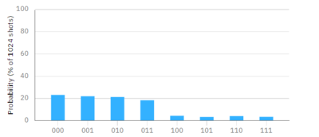
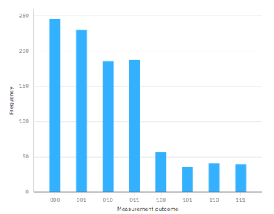

دارة التنقل
OPENQASM 2.0;
include "qelib1.inc";
gate nG0 ( param ) q {
h q;
}
qreg q[3];
creg c[3];
ry(pi/4) q[0]; #Step 1
barrier q[0],q[1],q[2];
cx q[1],q[2]; #Step 3
barrier q[0],q[1],q[2];
cx q[0],q[1]; #Step 4
h q[0]; #Step 5
barrier q[0],q[1],q[2];
cx q[1],q[2]; #Step 7
measure q[2] -> c[2]; #Step 6 attention this is step 6
measure q[1] -> c[1]; #Step 8
measure q[0] -> c[0]; #Step 8
الخطوة الاولى:
تمرير الكيوبت الاول في بوابة (Ry) الاستدارة على المحور ص (Y).
الخطوة الثانية:
تمرير الكيوبت الثاني في بوابة هادمارد (H).
الخطوة الثالثة:
تطبيق بوابة (سي نت) من الكيوبت الثاني إلى الكيوبت الثالث.
الخطوة الرابعة:
تطبيق بوابة (سي نت) من الكيوبت الأول إلى الكيوبت الثاني.
الخطوة الخامسة:
تطبيق بوابة هادمارد على الكيوبت الاول.
الخطوة السادسة:
قياس قيمة الكيو بت الاول.
الخطوة السابعة:
تطبيق بوابة (سي نت) من الكيوبت الثاني إلى الكيوبت الثالث.
الخطوة الثامنة:
قياس قيمة الكيوبت الثاني والثالث.
النتيجة النظرية:

النتيجة العملية:
